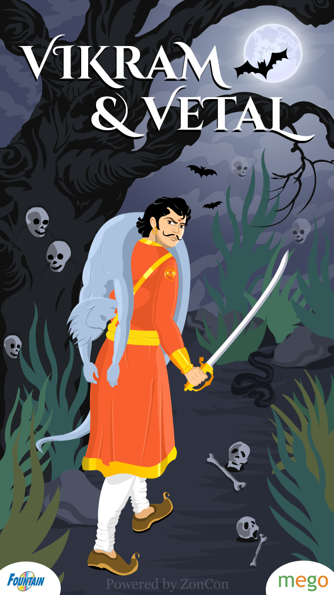

|
"આ સાંભળીને, ચોરે મનમાં કહ્યું, 'તે મને તેના ઘરેણાં આપવાનું વચન આપીને, સાચે જ મને છોડીને જાય છે, તો પછી હું તેનો પોશાક શા માટે બગાડું?' આમ વિચારીને, તેણે તેણીને જવા દીધી. (તે) પોતે ત્યાં બેસી ગયો, જ્યારે તે સોમદત્ત જ્યાં સૂતો હતો તે જગ્યાએ ગયો. તેણીએ ત્યાં પહોંચતાની સાથે જ તેને અચાનક જગાડ્યો, તે ગભરાઈને ઊભો થયો અને કહેવા લાગ્યો, 'કળા. તું કોઈ દેવની, કે ઋષિની કે સર્પની પુત્રી છે?' મને સાચું કહો, તું કોણ છે? અને તું મારી પાસે ક્યાંથી આવ્યો છે?' તેણીએ જવાબ આપ્યો, 'હું એક માણસની પુત્રી છું - વેપારી હિરણ્યદત્તની પુત્રી છું; મારું નામ મદનસેના છે; અને શું તને યાદ નથી કે તેં જબરદસ્તી કરી હતી. ગ્રોવમાં મારો હાથ પકડો, અને હું તમને મારા શપથ આપવાનો આગ્રહ રાખતો હતો; અને મેં તમારા કહેવા પર શપથ લીધા હતા, કે હું જેની સાથે લગ્ન કરું છું તેને છોડીને તમારી પાસે આવીશ? હું તે મુજબ આવ્યો છું; તમે જે કંઈ કરો તે મારી સાથે કરો. કૃપા કરીને.' " " આના પર તેણે પૂછ્યું, 'તેં આ વાર્તા તારા પતિને કહી છે કે નહીં?' તેણીએ જવાબ આપતાં કહ્યું, મેં આખો મામલો જણાવી દીધો છે, અને દરેક વાતથી પરિચિત થયા પછી તેણે મને તારી પાસે આવવાની મંજૂરી આપી છે.' સોમદત્તે કહ્યું, 'આ બાબત વસ્ત્રો વિનાના ઝવેરાત જેવી છે, અથવા સ્પષ્ટ માખણ વિનાનું ભોજન, અથવા સૂરથી ગાવાનું છે - આ બધી વસ્તુઓ એકસરખી છે. તેવી જ રીતે, ગંદા વસ્ત્રો સુંદરતાને નુકસાન પહોંચાડે છે, ખરાબ ખોરાક શક્તિને ગુમાવે છે, દુષ્ટ પત્ની જીવનથી વંચિત રહે છે, એક ખરાબ પુત્ર કુટુંબને બરબાદ કરે છે.જ્યારે રાક્ષસ તેના ગુસ્સામાં જીવ લે છે, સ્ત્રી, મિત્ર હોય કે શત્રુ, બંને સંજોગોમાં દુ:ખનો પ્રસંગ હોય છે. સ્ત્રી જે નથી કરતી તે થોડી ક્ષણ માટે છે; તેણી માટે તે તેના મનના વિચારોને ઉચ્ચારતી નથી; અને તેની જીભની ટોચ પર શું છે તે તે જાહેર કરતી નથી; અને તે જે કરે છે તે તે કહેતી નથી. ભગવાને સ્ત્રીમાં વિશ્વમાં એક અદ્ભુત પ્રાણી બનાવ્યું છે.' " " આ શબ્દો બોલ્યા પછી, વેપારીના પુત્રએ તેને જવાબ આપ્યો, 'મારે બીજાની પત્ની સાથે કંઈ લેવાદેવા નથી.' આ સાંભળીને તેણીએ ફરી ઘરનો માર્ગ લીધો.રસ્તામાં તેણી ચોરને મળી, (અને) તેને આખી વાત કહી.તે સાંભળીને ચોરે તેણીને ખૂબ બિરદાવી અને તેને જવા દીધી.તે તેના પતિની નજીક આવી અને તેને બધા સંજોગો કહ્યું; પરંતુ તેના પતિએ તેના પ્રત્યે કોઈ લાગણી દર્શાવી નહીં, અને કહ્યું, 'કોયલની સુંદરતા તેની નોંધમાં જ સમાયેલી છે; સ્ત્રીની સુંદરતા તેના પતિ પ્રત્યેની વફાદારી છે; અને એક નીચ પુરુષની સુંદરતા તેની નોંધમાં છે. જ્ઞાન ; ભક્તની સુંદરતા એ તેની ધીરજની સફર છે.' " આટલી બધી વાર્તા સંભળાવીને, સ્પ્રાઈટે કહ્યું, "હે રાજા! આ ત્રણમાં સૌથી વધુ ગુણ શું છે?" રાજા વિક્રમજીતે જવાબ આપ્યો, "ચોરની યોગ્યતા સૌથી મોટી છે." સ્પ્રાઉટે કહ્યું, "હોવીર?" રાજાએ જવાબ આપ્યો, "તેનું હૃદય બીજા પુરુષ પર બેઠેલું જોઈને, તેના પતિએ તેણીને છોડી દીધી; રાજાના ડરથી, સોમદત્તે તેણીને એકલી છોડી દીધી; જ્યારે ચોરે તેણીને છીનવી લીધા વિના છોડવાનું કોઈ કારણ ન હતું. તેથી ચોર શ્રેષ્ઠ છે." આ સાંભળીને, સ્પ્રાઉટ ફરીથી ગયો અને પોતાને તે ઝાડ પર લટકાવી દીધો; અને રાજા પણ ત્યાં ગયો, તેને ઝાડ પરથી ઉતારી, બાંધીને તેના ખભા પર બેસાડી, અને ફરી એક વાર તેને લઈ ગયો. |
 |
| પેજ નંબર ૨૬ | |